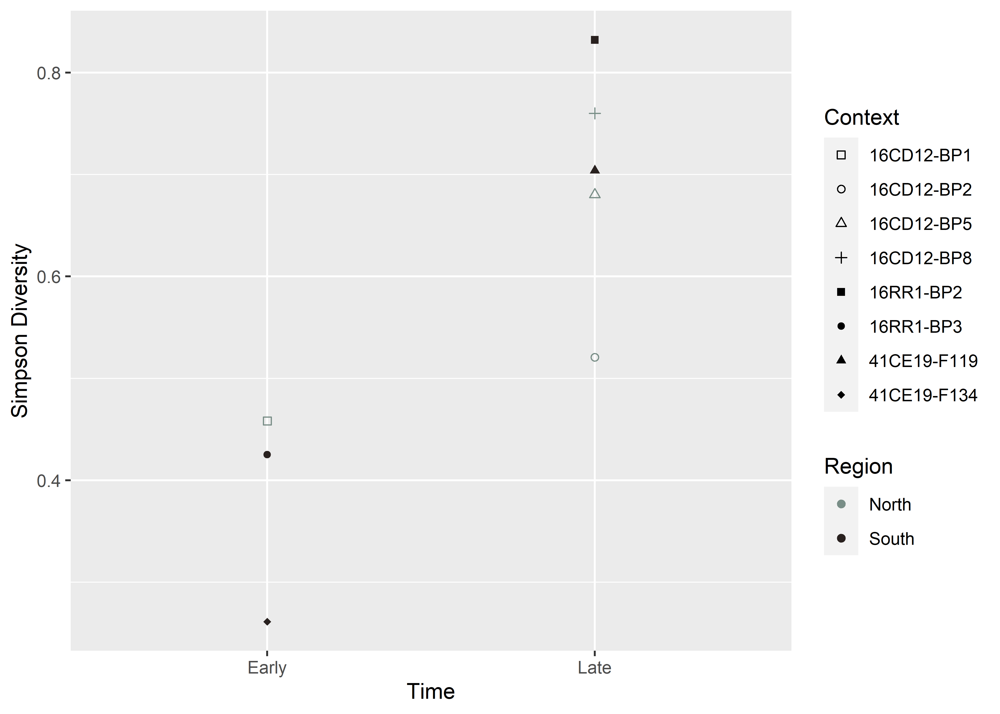
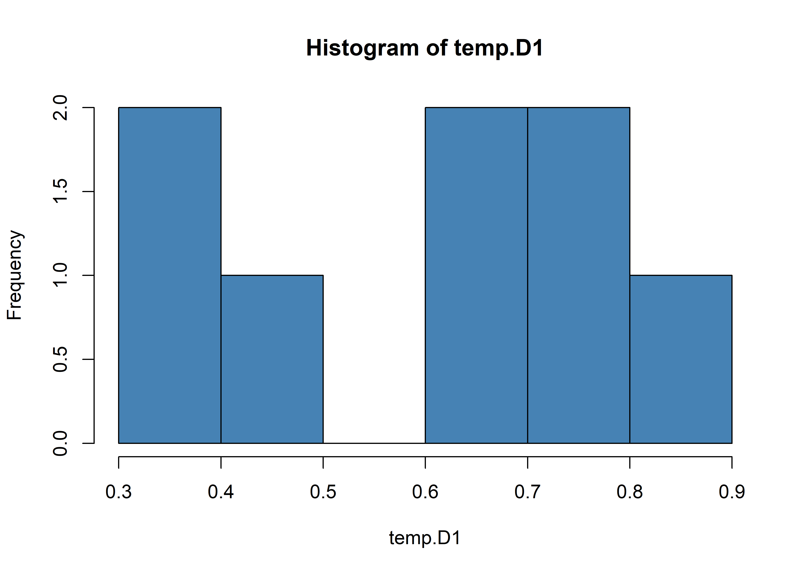
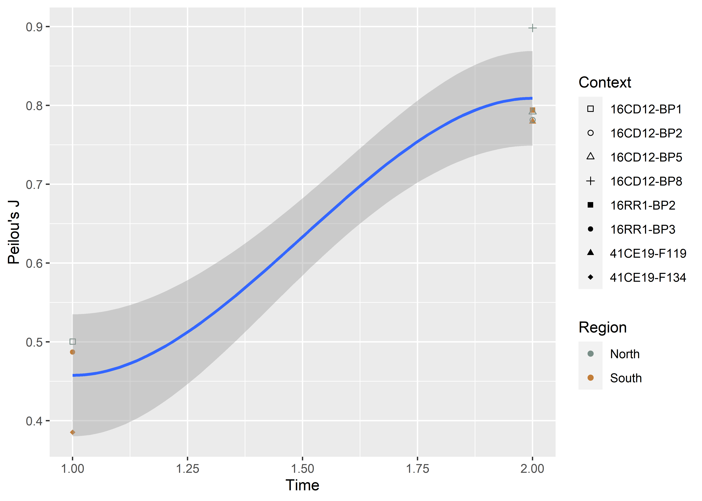
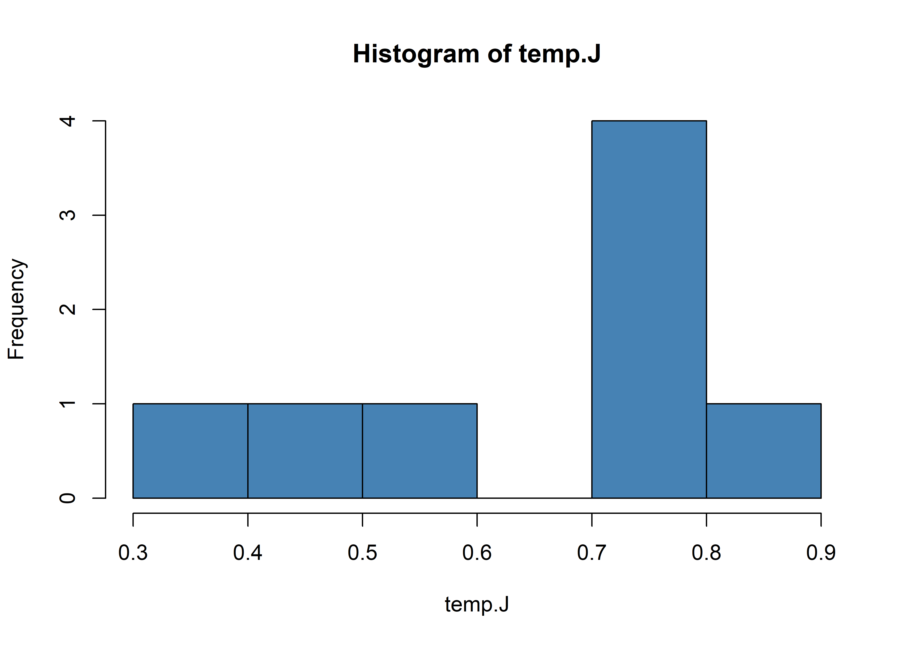

Chapter 3 Composition & Diversity
The analysis of mortuary assemblage diversity is limited to Caddo mortuary contexts at the Mounds Plantation, George C. Davis, and Gahagan Mound sites where Gahagan bifaces were recovered. We begin by looking at taxonomic composition, where the rows are reordered based on seriation results. Then to Alpha diversity and relative abundance, followed by Beta diversity. The Alpha and Beta diversity results raised the question of a potential increase in diversity through time.
Hypothesis: Caddo mortuary assemblages associated with Gahagan bifaces increase in diversity subsequent to their initial use in mortuary offerings.
This hypothesis was tested using counts of attributes and associated diagnostic artefacts recovered from Caddo mortuary contexts at the Mounds Plantation, George C. Davis, and Gahagan Mounds sites where Gahagan bifaces were included as part of the mortuary assemblage. The hypothesis assesses whether diagnostic material culture objects included with Caddo burials became more diverse and evenly distributed among the types as Caddo burial practices evolved.
3.1 Taxonomic composition
library(here)
library(tidyverse)
library(kableExtra)
# read data
raw <- read.csv("gahagan-diversity.csv")3.1.1 Reorder contexts based on seriation results
Data were reordered based on seriation results from the previous chapter (order of middle two rows are interchangeable). In the following three tables, all contexts are arranged from oldest (bottom) to youngest (top). All three are wide tables, and the columns at right can be viewed by scrolling to the right.
# arrange contexts based on seriation results
data <- raw %>%
arrange(match(context, c("16CD12-BP8", "16CD12-BP2", "41CE19-F119",
"16RR1-BP2", "16CD12-BP5", "16RR1-BP3",
"41CE19-F134","16CD12-BP1")))
## internments (scroll right for more)
knitr::kable(data[c(1:5, 7:9, 6, 10)]) %>%
kable_styling() %>%
scroll_box(width = "100%", box_css = "border: 0px;")| context | region | adult_male | adult_female | uid_adult | juvenile_male | juvenile_female | uid_juvenile | total_adult | total_juvenile |
|---|---|---|---|---|---|---|---|---|---|
| 16CD12-BP8 | North | 0 | 0 | 1 | 0 | 0 | 0 | 1 | 0 |
| 16CD12-BP2 | North | 0 | 0 | 1 | 0 | 0 | 0 | 1 | 0 |
| 41CE19-F119 | South | 1 | 1 | 2 | 0 | 0 | 0 | 4 | 0 |
| 16RR1-BP2 | South | 2 | 2 | 0 | 0 | 1 | 0 | 4 | 1 |
| 16CD12-BP5 | North | 3 | 8 | 1 | 0 | 0 | 9 | 12 | 9 |
| 16RR1-BP3 | South | 1 | 0 | 1 | 0 | 0 | 1 | 2 | 1 |
| 41CE19-F134 | South | 0 | 2 | 4 | 0 | 0 | 1 | 6 | 1 |
| 16CD12-BP1 | North | 1 | 0 | 1 | 0 | 0 | 1 | 2 | 1 |
## lithic offerings (scroll right for more)
knitr::kable(data[c(1:2, 11:19, 26)]) %>%
kable_styling() %>%
scroll_box(width = "100%", box_css = "border: 0px;")| context | region | alba | celt | catahoula | friley | gahagan | hayes | harrell | reed | scallorn | lithics |
|---|---|---|---|---|---|---|---|---|---|---|---|
| 16CD12-BP8 | North | 0 | 0 | 4 | 0 | 1 | 0 | 0 | 0 | 1 | 6 |
| 16CD12-BP2 | North | 1 | 0 | 0 | 0 | 8 | 4 | 0 | 0 | 0 | 13 |
| 41CE19-F119 | South | 5 | 3 | 0 | 0 | 12 | 1 | 0 | 0 | 0 | 21 |
| 16RR1-BP2 | South | 31 | 14 | 0 | 0 | 16 | 8 | 2 | 16 | 19 | 106 |
| 16CD12-BP5 | North | 12 | 0 | 0 | 1 | 2 | 9 | 0 | 0 | 19 | 43 |
| 16RR1-BP3 | South | 89 | 3 | 0 | 0 | 15 | 0 | 0 | 0 | 11 | 118 |
| 41CE19-F134 | South | 157 | 10 | 0 | 0 | 16 | 1 | 0 | 0 | 0 | 184 |
| 16CD12-BP1 | North | 35 | 1 | 2 | 1 | 1 | 3 | 0 | 0 | 0 | 43 |
## ceramic offerings (scroll right for more)
knitr::kable(data[c(1:2, 20:25, 27)]) %>%
kable_styling() %>%
scroll_box(width = "100%", box_css = "border: 0px;")| context | region | coles_creek | hickory_engraved | holly_fine_engraved | kiam_incised | ceramic_bottle | ceramic_bowl | ceramics |
|---|---|---|---|---|---|---|---|---|
| 16CD12-BP8 | North | 0 | 1 | 1 | 0 | 0 | 2 | 2 |
| 16CD12-BP2 | North | 0 | 0 | 0 | 0 | 0 | 0 | 0 |
| 41CE19-F119 | South | 0 | 0 | 2 | 0 | 1 | 1 | 2 |
| 16RR1-BP2 | South | 0 | 1 | 1 | 1 | 1 | 2 | 3 |
| 16CD12-BP5 | North | 0 | 0 | 0 | 0 | 0 | 0 | 0 |
| 16RR1-BP3 | South | 0 | 0 | 1 | 0 | 1 | 0 | 1 |
| 41CE19-F134 | South | 0 | 0 | 0 | 0 | 0 | 0 | 0 |
| 16CD12-BP1 | North | 1 | 1 | 1 | 0 | 0 | 2 | 3 |
3.2 Alpha diversity
library(vegan)## Loading required package: permute##
## Attaching package: 'permute'## The following object is masked from 'package:seriation':
##
## permute## This is vegan 2.5-7##
## Attaching package: 'vegan'## The following object is masked from 'package:rcarbon':
##
## calibrate## assemblage size (N)
N <- rowSums(data[11:25])
N## [1] 10 13 25 112 43 120 184 48# number of each type recovered
T <- colSums(data[11:25])
T## alba celt catahoula friley
## 330 31 6 2
## gahagan hayes harrell reed
## 71 26 2 16
## scallorn coles_creek hickory_engraved holly_fine_engraved
## 50 1 3 6
## kiam_incised ceramic_bottle ceramic_bowl
## 1 3 7## richness (S) = number of types from each mortuary context
S <- specnumber(data[11:25])
S## [1] 6 3 7 12 5 6 4 10## ubiquity (U) = number of mortuary contexts that contain each type
U <- specnumber(data[11:25], MARGIN = 2)
U## alba celt catahoula friley
## 7 5 2 2
## gahagan hayes harrell reed
## 8 6 1 1
## scallorn coles_creek hickory_engraved holly_fine_engraved
## 4 1 3 5
## kiam_incised ceramic_bottle ceramic_bowl
## 1 3 43.3 Relative abundance
## mean number of observations for each type
colMeans(data[11:25])## alba celt catahoula friley
## 41.250 3.875 0.750 0.250
## gahagan hayes harrell reed
## 8.875 3.250 0.250 2.000
## scallorn coles_creek hickory_engraved holly_fine_engraved
## 6.250 0.125 0.375 0.750
## kiam_incised ceramic_bottle ceramic_bowl
## 0.125 0.375 0.875# convert to percentage
data.pct <- data[11:25]/N*100
## mean percent (Mp) of each type
Mp <- colMeans(data.pct)
Mp## alba celt catahoula friley
## 39.4609095 4.3147645 5.5208333 0.5511143
## gahagan hayes harrell reed
## 20.2192905 8.7044748 0.2232143 1.7857143
## scallorn coles_creek hickory_engraved holly_fine_engraved
## 10.0396249 0.2604167 1.6220238 2.7261905
## kiam_incised ceramic_bottle ceramic_bowl
## 0.1116071 0.7157738 3.7440476## percentage of sites that include each type
Up <- U/length(N)*100
Up## alba celt catahoula friley
## 87.5 62.5 25.0 25.0
## gahagan hayes harrell reed
## 100.0 75.0 12.5 12.5
## scallorn coles_creek hickory_engraved holly_fine_engraved
## 50.0 12.5 37.5 62.5
## kiam_incised ceramic_bottle ceramic_bowl
## 12.5 37.5 50.03.3.1 Relative abundance by context
library(dplyr)
library(reshape)
library(ggplot2)
library(ggpubr)
library(ggExtra)
library(wesanderson)
# relative abundance of Caddo adult and juvenile burials
pal <- wes_palette("Moonrise2", 2, type = "continuous")
burials <- data %>%
select(context, total_adult, total_juvenile) %>%
mutate(context = paste(context, c("(N)", "(N)", "(S)", "(S)",
"(N)", "(S)", "(S)", "(N)"))) %>%
melt(id.vars = "context")
# configure plot
plot1 <- burials %>%
arrange(context) %>%
mutate(context = factor(context, levels = c(
"16CD12-BP1 (N)", "41CE19-F134 (S)", "16RR1-BP3 (S)",
"16CD12-BP5 (N)", "16RR1-BP2 (S)", "41CE19-F119 (S)",
"16CD12-BP2 (N)", "16CD12-BP8 (N)"))) %>%
ggplot(aes(x = context, y = value, fill = variable)) +
geom_bar(stat = "identity", position = "fill") +
coord_flip() +
scale_fill_manual(values = pal) +
labs(x = "Context",
y = "Relative abundance (%)",
fill = "Category")
# relative abundance of burials by age (where known)
pal <- wes_palette("Moonrise2", 6, type = "continuous")
burials <- data %>%
select(context, adult_male:uid_adult, juvenile_male:uid_juvenile) %>%
mutate(context = paste(context, c("(N)", "(N)", "(S)", "(S)",
"(N)", "(S)", "(S)", "(N)"))) %>%
melt(id.vars = "context")
# configure plot
plot2 <- burials %>%
arrange(context) %>%
mutate(context = factor(context, levels = c(
"16CD12-BP1 (N)", "41CE19-F134 (S)", "16RR1-BP3 (S)",
"16CD12-BP5 (N)", "16RR1-BP2 (S)", "41CE19-F119 (S)",
"16CD12-BP2 (N)", "16CD12-BP8 (N)"))) %>%
ggplot(aes(x = context, y = value, fill = variable)) +
geom_bar(stat = "identity", position = "fill") +
coord_flip() +
scale_fill_manual(values = pal) +
labs(x = "Context",
y = "Relative abundance (%)",
fill = "Category")
# render figure
figure <- ggarrange(plot1, plot2,
labels = c("a","b"),
ncol = 1, nrow = 2)
## plot figure
figure(#fig:plot.burial.diversity)Relative abundance of age and sex data associated with burials. For this undertaking, the term juvenile encompassess all non-adults. Contexts ordered temporally from bottom to top based upon seriation results provided in the previous chapter. Middle two contexts (16RR1-BP2 and 16CD12-BP5) are interchangeable.
# relative abundance of lithics + ceramics
pal1 <- wes_palette("Moonrise2", 2, type = "continuous")
cerlith <- data %>%
select(context, lithics, ceramics) %>%
mutate(context = paste(context, c("(N)", "(N)", "(S)", "(S)",
"(N)", "(S)", "(S)", "(N)"))) %>%
melt(id.vars = "context")
# configure plot
plot3 <- cerlith %>%
arrange(context) %>%
mutate(context = factor(context, levels = c(
"16CD12-BP1 (N)", "41CE19-F134 (S)", "16RR1-BP3 (S)",
"16CD12-BP5 (N)", "16RR1-BP2 (S)", "41CE19-F119 (S)",
"16CD12-BP2 (N)", "16CD12-BP8 (N)"))) %>%
ggplot(aes(x = context, y = value, fill = variable)) +
geom_bar(stat = "identity", position = "fill") +
coord_flip() +
scale_fill_manual(values = pal1) +
labs(x = "Context",
y = "Relative abundance (%)",
fill = "Category")
# relative abundance of diagnostic types
pal <- wes_palette("Moonrise2", 17, type = "continuous")
diagnostics <- data %>%
select(context, alba:ceramic_bowl) %>%
mutate(context = paste(context, c("(N)", "(N)", "(S)", "(S)",
"(N)", "(S)", "(S)", "(N)"))) %>%
melt(id.vars = "context")
# configure plot
plot4 <- diagnostics %>%
arrange(context) %>%
mutate(context = factor(context, levels = c(
"16CD12-BP1 (N)", "41CE19-F134 (S)", "16RR1-BP3 (S)",
"16CD12-BP5 (N)", "16RR1-BP2 (S)", "41CE19-F119 (S)",
"16CD12-BP2 (N)", "16CD12-BP8 (N)"))) %>%
ggplot( aes(x = context, y = value, fill = variable)) +
geom_bar(stat = "identity", position = "fill") +
coord_flip() +
scale_fill_manual(values = pal) +
labs(x = "Context",
y = "Relative abundance (%)",
fill = "Types") +
theme(legend.key.height = unit(0.05, "cm"))
# render figure
figure <- ggarrange(plot3, plot4,
labels = c("c","d"),
ncol = 1, nrow = 2)
## plot figure
figure(#fig:plot.alpha.diversity)Relative abundance of associated diagnostics. Contexts ordered temporally from bottom to top based upon seriation results provided in the previous chapter. Middle two contexts (16RR1-BP2 and 16CD12-BP5) are interchangeable.
3.4 Beta diversity
# diversity - diagnostics
# Simpson diversity
data$D1 <- diversity(data[11:25], index = "simpson")
D1 <- data$D1
# evenness - diagnostics
# Shannon diversity
data$H <- diversity(data[11:25])
H <- data$H
# Pielou's J (Shannon diversity index divided by natural log of richness)
data$J <- H/log(S)
J <- data$J# identify high & low diversity assemblages
ggplot(data, aes(x = D1, y = J)) +
geom_text(aes(label = rownames(data), colour = region)) +
geom_vline(aes(xintercept = median(D1))) +
geom_hline(aes(yintercept = median(J))) +
theme(legend.position = c(0.87, 0.15)) +
scale_colour_manual(values = pal1) +
labs(color = "Behavioral Region",
caption = "(J = Peilou's J; D1 = Simpson diversity)")Figure 3.1: Caddo burial assemblages that include Gahagan bifaces; 1, 16CD12-BP8; 2, 16CD12-BP2; 3, 41CE19-F119; 4, 16RR1-BP2; 5, 16CD12-BP5; 6, 16RR1-BP3; 7, 41CE19-F134; 8, 16CD12-BP1. The three sites in the lower part of the left quadrat exhibit lower diversity and evenness, and represent the three earliest contexts to include a Gahagan biface. Those sites in the upper right quadrat have higher diversity and evenness, and occur later than those in the lower left quadrat.
3.5 Diversity through time
Hypothesis: Caddo mortuary assemblages associated with Gahagan bifaces increase in diversity subsequent to their initial use in mortuary offerings.
This hypothesis is tested using counts of attributes and associated diagnostic artefacts recovered from Caddo mortuary contexts at the Mounds Plantation, George C. Davis, and Gahagan Mounds sites where Gahagan bifaces were included as part of the mortuary assemblage. The hypothesis assesses whether diagnostic material culture objects included with Caddo burials became more diverse and evenly distributed among the types as Caddo burial practices evolved.
# diversity
library(RRPP)
# mutate data to add temporal assignment
temp <- data %>%
mutate(temporal = c("Subsequent", "Subsequent", "Subsequent", "Subsequent",
"Subsequent", "Initial", "Initial", "Initial"),
.after = region)
# revised table of diagnostics
knitr::kable(temp) %>%
kable_styling() %>%
scroll_box(width = "100%", box_css = "border: 0px;")| context | region | temporal | adult_male | adult_female | uid_adult | total_adult | juvenile_male | juvenile_female | uid_juvenile | total_juvenile | alba | celt | catahoula | friley | gahagan | hayes | harrell | reed | scallorn | coles_creek | hickory_engraved | holly_fine_engraved | kiam_incised | ceramic_bottle | ceramic_bowl | lithics | ceramics | D1 | H | J |
|---|---|---|---|---|---|---|---|---|---|---|---|---|---|---|---|---|---|---|---|---|---|---|---|---|---|---|---|---|---|---|
| 16CD12-BP8 | North | Subsequent | 0 | 0 | 1 | 1 | 0 | 0 | 0 | 0 | 0 | 0 | 4 | 0 | 1 | 0 | 0 | 0 | 1 | 0 | 1 | 1 | 0 | 0 | 2 | 6 | 2 | 0.7600000 | 1.6094379 | 0.8982444 |
| 16CD12-BP2 | North | Subsequent | 0 | 0 | 1 | 1 | 0 | 0 | 0 | 0 | 1 | 0 | 0 | 0 | 8 | 4 | 0 | 0 | 0 | 0 | 0 | 0 | 0 | 0 | 0 | 13 | 0 | 0.5207101 | 0.8587409 | 0.7816597 |
| 41CE19-F119 | South | Subsequent | 1 | 1 | 2 | 4 | 0 | 0 | 0 | 0 | 5 | 3 | 0 | 0 | 12 | 1 | 0 | 0 | 0 | 0 | 0 | 2 | 0 | 1 | 1 | 21 | 2 | 0.7040000 | 1.5169478 | 0.7795570 |
| 16RR1-BP2 | South | Subsequent | 2 | 2 | 0 | 4 | 0 | 1 | 0 | 1 | 31 | 14 | 0 | 0 | 16 | 8 | 2 | 16 | 19 | 0 | 1 | 1 | 1 | 1 | 2 | 106 | 3 | 0.8321110 | 1.9731801 | 0.7940661 |
| 16CD12-BP5 | North | Subsequent | 3 | 8 | 1 | 12 | 0 | 0 | 9 | 9 | 12 | 0 | 0 | 1 | 2 | 9 | 0 | 0 | 19 | 0 | 0 | 0 | 0 | 0 | 0 | 43 | 0 | 0.6803678 | 1.2745830 | 0.7919429 |
| 16RR1-BP3 | South | Initial | 1 | 0 | 1 | 2 | 0 | 0 | 1 | 1 | 89 | 3 | 0 | 0 | 15 | 0 | 0 | 0 | 11 | 0 | 0 | 1 | 0 | 1 | 0 | 118 | 1 | 0.4251389 | 0.8726411 | 0.4870303 |
| 41CE19-F134 | South | Initial | 0 | 2 | 4 | 6 | 0 | 0 | 1 | 1 | 157 | 10 | 0 | 0 | 16 | 1 | 0 | 0 | 0 | 0 | 0 | 0 | 0 | 0 | 0 | 184 | 0 | 0.2614012 | 0.5344039 | 0.3854909 |
| 16CD12-BP1 | North | Initial | 1 | 0 | 1 | 2 | 0 | 0 | 1 | 1 | 35 | 1 | 2 | 1 | 1 | 3 | 0 | 0 | 0 | 1 | 1 | 1 | 0 | 0 | 2 | 43 | 3 | 0.4583333 | 1.1523342 | 0.5004524 |
# attributes for plots
temp.D1 <- temp$D1
temp.J <- temp$J
time <- temp$temporal
#diversity
## plot diversity
ggplot(temp, aes(x = time, y = temp.D1)) +
geom_jitter(position=position_jitter(0), cex = 3, shape = as.character(1:8)) +
labs(x = "Time",
y = "Simpson Diversity",
shape = "Context")
# are data not normally distributed?
shapiro.test(temp.D1)##
## Shapiro-Wilk normality test
##
## data: temp.D1
## W = 0.955, p-value = 0.7613## plot distribution
hist(temp.D1, col='steelblue')
# MODEL: temp.D1 as a function of time
temp.simpson <- lm.rrpp(temp.D1 ~ time,
data = temp,
print.progress = FALSE,
iter = 9999)
## ANOVA: increase in diversity through time?
anova(temp.simpson)##
## Analysis of Variance, using Residual Randomization
## Permutation procedure: Randomization of null model residuals
## Number of permutations: 10000
## Estimation method: Ordinary Least Squares
## Sums of Squares and Cross-products: Type I
## Effect sizes (Z) based on F distributions
##
## Df SS MS Rsq F Z Pr(>F)
## time 1 0.189385 0.189385 0.71408 14.985 2.3125 0.01565 *
## Residuals 6 0.075829 0.012638 0.28592
## Total 7 0.265214
## ---
## Signif. codes: 0 '***' 0.001 '**' 0.01 '*' 0.05 '.' 0.1 ' ' 1
##
## Call: lm.rrpp(f1 = temp.D1 ~ time, iter = 9999, data = temp, print.progress = FALSE)3.5.1 Evenness through time
# evenness
## plot evenness
ggplot(temp, aes(x = time, y = temp.J)) +
geom_jitter(position=position_jitter(0.03), cex = 3, shape = as.character(1:8)) +
scale_shape_manual(values = c(0:3,15:18)) +
labs(x = "Time",
y = "Peilou's J",
shape = "Context")
# are data not normally distributed?
shapiro.test(temp.J)##
## Shapiro-Wilk normality test
##
## data: temp.J
## W = 0.84242, p-value = 0.07976## plot distribution
hist(temp.J, col='steelblue')
# MODEL: temp.J as a function of time
temporal.J <- lm.rrpp(temp.J ~ time,
data = temp,
print.progress = FALSE,
iter = 9999)
## ANOVA: increase in evenness through time?
anova(temporal.J)##
## Analysis of Variance, using Residual Randomization
## Permutation procedure: Randomization of null model residuals
## Number of permutations: 10000
## Estimation method: Ordinary Least Squares
## Sums of Squares and Cross-products: Type I
## Effect sizes (Z) based on F distributions
##
## Df SS MS Rsq F Z Pr(>F)
## time 1 0.231576 0.231576 0.9279 77.213 2.5038 0.00585 **
## Residuals 6 0.017995 0.002999 0.0721
## Total 7 0.249571
## ---
## Signif. codes: 0 '***' 0.001 '**' 0.01 '*' 0.05 '.' 0.1 ' ' 1
##
## Call: lm.rrpp(f1 = temp.J ~ time, iter = 9999, data = temp, print.progress = FALSE)